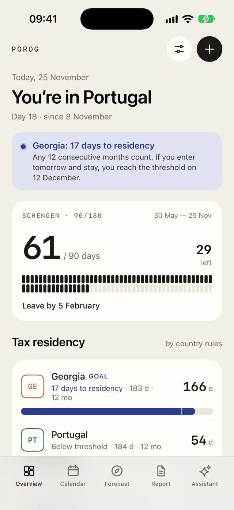
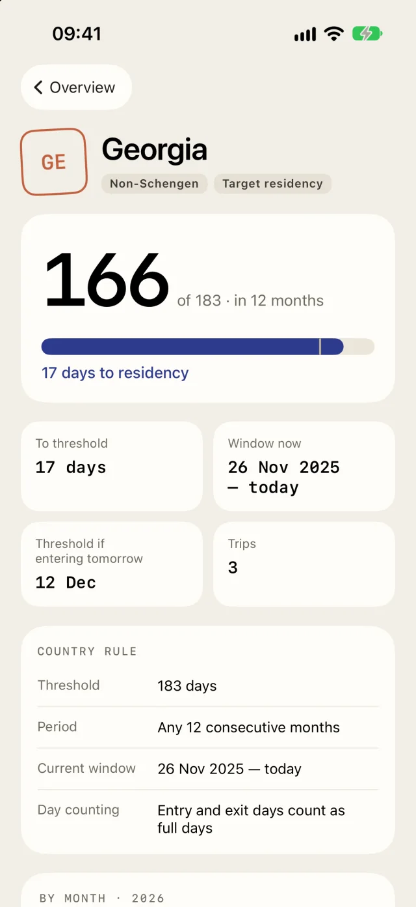
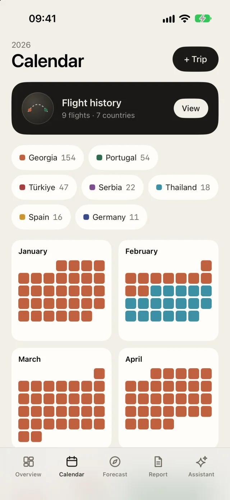
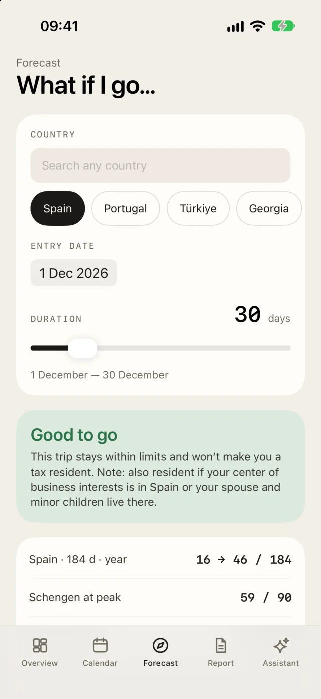

Trip suggestions
Optional hints from the time and place of your photos and calendar events, read on the device.


Porog tracks each country’s tax residency rules and the Schengen 90/180 limit, and warns you before you cross a threshold.



The last 180 days, up to today
Every day the Schengen rule looks back 180 days, today included.
All days spent in the Schengen area add up. The day you arrive and the day you leave both count.
The window moves on. A day that falls out of it is yours to spend again.
How long could you stay from tomorrow? Move the slider: each day of the trip is checked against its own window.
An example with three past stays.


Every flight of the year, replayed. Turn the globe, zoom in or tap any country.
Porog knows the period, the threshold and how days are counted. Pick a country.
Rules are simplified. Porog does not replace advice from a tax professional or official authorities.Trips stay on your device and in your own iCloud. There is no Porog server and we cannot see your travel history.
Optional hints from the time and place of your photos and calendar events, read on the device.

Point the camera at a boarding pass and the trip fills itself in.

Off by default. Only the country and the date are kept, on this device only.


Notifications ahead of a limit, on the day count you choose.
See how a planned trip changes your counts before you book it.
The whole year at a glance, and your flight history on a globe.

A PDF statement of stay and CSV export.

Tickets, stamps and bookings attached to trips.

Send a card with your days to someone you travel with.


Your counts on the Home and Lock Screen, and actions for Siri and Shortcuts.
Your counts on your wrist.
Your travel year on the big screen.
iPhone · iPad · Apple Watch · Apple TV